Output
Installation Instructions
Usage
Configuration
Details and Definitions
Extracting Logs
Writing a new report section
New: log4j attacks
2025-06-02
Super Webtrax
Updated 02 Jun 2025 version 17
This is the help file for Super Webtrax version S24. updated
These Your feedback on the help file and the program is welcome.
SWT is open source and can be downloaded from  https://github.com/thvv/swt
https://github.com/thvv/swt
Brief Summary

Super Webtrax (SWT) reads web server logs and produces an HTML page containing a daily web site usage report, covering the previous day's usage. The report has multiple report sections and many options.
Web servers, such as Apache and Nginx, write a log file entry every time they send a file to a user. Once a day, SWT loads a web server log into a MySQL database. SWT expands templates to produce HTML reports with graphs and tables.
I look at the report every day for
- Signs of problems with the site or ISP
- Signs of attacks or misuse
- Level of traffic, for resource and cost management
- Popularity of pages on the web site
Report contents
A visit to your site is a sequence of web page views from the same net address. If SWT hasn't seen this address before, it's a new visitor. Some visits are from humans using a web browser: these are "non-indexer (or NI) visits". The rest are from web indexers building indexes like Google and Yahoo, or web crawlers mining pages for advertising: these are "indexer visits".
The report web page is divided into report sections by headings in blue bands. Click the little control on the extreme right of the blue band to expand a report section into a more detailed version.
For most people, the Month Summary and the Visit Details sections are the most interesting.
What SWT Does
SWT is a web server log file analysis program. It works best on logs that include the "referrer" and "browser" fields, such as the "NCSA Combined Format."
A typical Apache log file record looks like this:
207.46.13.81 - - [03/Jun/2021:00:01:14 -0400] "GET /mtbs/mtb757.html HTTP/1.1" 301 515 "-" "Mozilla/5.0"
Each log record has nine fields, separated by spaces. If a field might contain spaces, it is enclosed in quotes. The fields are
[IP Address] [-] [username] [timestamp] [request] [statuscode] [bytes] [referrer] [user_agent]
where [request] is [verb] [resource] [protocol]
SWT reads a web server log file, loads the log file into a MySQL database, and writes over 40 different graphical and tabular report sections summarizing visits and hits.
SWT output is extremely extensible and customizable.
SWT uses programs written in  Perl and
Perl and  MySQL (both are free) and is therefore portable to many platforms.
MySQL (both are free) and is therefore portable to many platforms.
Experience with SWT
Super Webtrax has been used since 2006 on a small number of sites. See the "future work" section below. I have used SWT on web sites that have a few dozen hits per day, and ones that had a million hits per day. I have extended SWT for specialized sites with custom reports that summarize logs generated by server-side applications, and reports that look for particular access patterns, such as a "funnel analysis" that analyzed users' progress through a transaction.
I have used SWT with web server log file extracts that cover a day's worth of accesses, from various ISPs. For example, Pair Networks places a daily log extract in the directory www_logs, named www.yyyyMMdd, if you configure this option.
I have used SWT on Unix and Linux server machines that generate log files covering many days, and occasionally roll over to a new log. For example, I have set up virtual servers on Rackspace, installed Apache and MySQL, and used a program, logextractor2 (supplied with SWT) to extract the previous day's log records into a temporary log file, and fed that file to SWT. I ran logextractor2 like this:
logextractor2 -day yesterday /var/log/www_log /var/log/www_log.0 > oneday.log
to handle the case where the log might roll over during a day and split usage into two files. Then I fed oneday.log to SWT.
I have used SWT to analyze traffic on a group of web server machines, extracting each server's previous-day log data and then modifying and merging the logs into a single stream of records, and producing one combined SWT report for all the servers.
SWT is oriented toward producing a single daily usage report and is not appropriate for real-time traffic monitoring. Sites with very large numbers of hits per day might want to create additional reports that summarize features of their usage.
Limitations of Web Logs
SWT can only display information from the logs it's given; some information may not get into the server logs because of
-
Information that isn't in the HTTP protocol. There is no unique identification of the person viewing the file included in the protocol. What we have is the IP address used by the computer that requested the file. Assuming that this address corresponds to a single computer or a single "visitor" to the web site doesn't account for various IP sharing arrangements, proxies, multi-user computers, serial use of the same computer by many people, dialup pools, and many other possible confounding factors. Super Webtrax aggregates successive hits from the same IP address within a configurable period of time into a "visit."
-
Caching at the visitor's browser. An end user's browser may display a page or image to the screen without reading a file from the web, if it thinks has seen it before. In this case, the web server doesn't know it happened and doesn't write a log record.
-
Caching at a network proxy. An end user's web browser may request a file, and some intermediate server may answer the request. AOL, for example, used to cache pages, images, and applets somewhere between your web server and the end user. The web server saw far fewer hits than you might expect, and if you combined all the AOL hits together (as you might with the webtrax "pre_domain" mapping), then the resulting path through the site appeared to be one visitor who jumped from file to file in unexpected ways.
-
Other proxy behavior. For example, it used to be that if a visitor from Microsoft visited your site, the server logged a whole cloud of hits from multiple different IPs, but it was all the same visitor, or a mix of multiple visitors. There was no way to tell from the logs. Other VPN and cloaking proxies can similarly break the association between IP address in the log and actual visitor behavior.
-
Browser prefetching. An end user's browser may see links on a page and pre-fetch resources in case the end user requests them. This may cause hits to appear in the browser log even though the end user never views the resources; this behavior could also cause the time between pages to display as zero.
-
Site slurpers. A web log may contain many records with timestamps very close together from the same IP, generated by a program that reads website files and follows their links. Common programs such as wget and curl can cause such log sequences. Some web browsers "read ahead" and issue background requests for pages linked to by the one a visitor is viewing, in case links are followed. Web indexers find your site somehow, and then read every page they can find, by chasing all pages' links.
-
Misleading information sent to the web server. Web server logs contain two data fields copied from the visitor's request: referring URL and user agent. These fields are interesting enough to report, but can be spoofed by the requestor. Several browsers allow the user to specify what user agent to use in requests, in order to elicit desired web server responses. Web crawler programs routinely insert bogus data into these fields. (Malicious attackers can also try to insert attack code, so these fields must be handled with care.)
-
Web server behavior writing the log. Some web servers may discard log events in order to keep up at times of heavy load. If the disk partition where the log resides becomes full, the web server may keep serving files but skip writing the logs. Log entries may not be written in the order that requests were issued from the end user: I have seen cases on some web servers where the log entry for a graphic linked by a page has a timestamp before the page's entry.
-
Web client bugs. Some browsers, crawlers, and web apps send HTTP requests that are not in the standard form.
SWT ignores these problems. This is reasonable for web sites with light to medium activity, where a burst of accesses from the same IP address is usually the result of one user's actions. SWT does not use web cookies or JavaScript or Flash code to distinguish visitors.
It is up to the reader of SWT reports to interpret patterns of accesses in the report, for instance noticing that pages are requested faster than a human user could read or click, or the sequence of pages read does not follow from the link structure of the site. SWT has a few heuristics for marking some visits as "Indexer," for example if a session begins with a hit on robots.txt or has a user_agent of a known web crawler.
History
Webtrax was a Perl program originally written by John Callender on best.com about 1995, and substantially enhanced by Tom Van Vleck from 1996 to 2005. Many users contributed suggestions and features. Like any program that grew incrementally over ten years, Webtrax had its share of mistakes and problems. Its large number of options (over 80) and their inconsistent naming and interaction became an embarrassment. The non-modularity of the program made sense when it was little, but became a problem that inhibited further enhancements. Vestigial features that might or might not work littered the code. Perl was a wonderful tool for writing Webtrax, but it was used in a low-level way and its performance and memory consumption limited the size of log that could be processed.
Super Webtrax represents a second generation, begun in 2006. It loads the log data into a temporary MySQL database table and then generates report sections from queries against the database. The new version uses 7-10 times less CPU and substantially less memory (a report on 241,000 hits took less than 30 minutes to create). Because each report section is generated from one or more database queries, adding new report sections and debugging is easier. SWT's totals are more accurate and consistent, and data is more consistently sanitized against XSS attacks. Each report section is generated from a template using expandfile.
The downside of the new implementation is that users need to install more tools in order to run the program, and report developers need to know more (e.g. SQL) to enhance the output.
Features of Super Webtrax
- Usage is displayed in a generated web page containing up to 49 configurable report sections, showing:
- Month Summary. Usage by day for the last month, and comparson of usage to yesterday, week ago, and month average
- Pie Charts. Pie charts summarizing usage
- Analysis. Table summarizing usage totals
- HTML pages. Report of hits on HTML pages with horizontal bar chart striped by hit source
- Graphic files. Report of hits on graphic files with horizontal bar chart striped by hit source
- CSS files. Report of hits on css files with horizontal bar chart striped by hit source
- Flash files. Report of hits on flash files with horizontal bar chart striped by hit source
- Files Downloaded. Report of hits on binary download files with horizontal bar chart striped by hit source
- Sound files. Report of hits on sound files with horizontal bar chart striped by hit source
- XML files. Report of hits on XML files with horizontal bar chart striped by hit source
- Java Class files. Report of hits on Java Class files with horizontal bar chart striped by hit source
- Source files. Report of hits on source files with horizontal bar chart striped by hit source
- Other files. Report of hits on other files with horizontal bar chart striped by hit source
- Files not found. Report of attempts to access nonexistent files
- Forbidden transactions. Table showing attempts to access files denied by .htaccess restriction
- Illegal referrers. Report showing non-HTML files not referred by a local HTML file with horizontal bar chart
- Hits by access time. Vertical bar chart: hits by access time, striped by html/graphic/other
- NI Visits by duration. Report of non-indexer visits ordered by estimated duration with horizontal bar chart
- NI Visits by number of hits. Report of non-indexer visits ordered by number of hits
- NI Visits by number of page views. Report of non-indexer visits ordered by number of page views
- Visitors. Report of visits by domain with horizontal bar chart striped by visit class
- Visits by Top Level Domain. Report of visits by toplevel domain with horizontal bar chart striped by visit class
- Visits by Second Level Domain. Report of visits by second level domain with horizontal bar chart striped by visit class
- Visits by Third Level Domain. Report of visits by third level domain with horizontal bar chart striped by file type
- Visits by City. Report of non-indexer visits by city with horizontal bar chart striped by visit class
- Visits by Authenticated Users. Report of visits by username used to authenticate with horizontal bar chart striped by file type
- Visits by Class. Report of hits by class, striped by source
- Hits by Browser. Report of hits by browser, striped by visit class
- Hits by Query. Report of hits by query with horizontal bar chart
- Word Usage in Queries. Report of words in queries with horizontal bar chart
- Visits by Search Engine. Report of hits by search engine with horizontal bar chart
- Files Crawled by Google. Report of files crawled by Google showing time
- Hits by Referrer. Report of hits by referrer with horizontal bar chart
- Hits by Referring Domain. Report of hits by referring domain with horizontal bar chart
- Number of Hits by file size. Report of hits by file size with horizontal bar chart
- Hits by Local Query. Report of hits by local query with horizontal bar chart
- Repeated Hits by Domain. Report of repeated hits by domain with horizontal bar chart
- Attacks on the site. Table showing various attacks on the site
- Transactions by server return code. Table of transactions by return code
- Transactions by protocol verb. Table of transactions by protocol verb
- Visit Details. Listing of HTML files accessed in each visit by time
- Cumulative Non-search Hits by Referrer Domain. Report of cumulative hits by referring domain with horizontal bar chart
- Cumulative Hits by Query. Report of cumulative hits by query with horizontal bar chart
- Cumulative hits by visitor. Report of cumulative hits by visitor with horizontal bar chart
- Visitors by days since last visit. Report of number of visitors by days since last visit with horizontal bar chart
- Cumulative Query Word Usage. Report of cumulative words in queries with horizontal bar chart
- Traffic by year. Report traffic by year with horizontal bar chart
- Cumulative hits on HTML Pages. Report of cumulative hits by HTML page with horizontal bar chart
- Hits by month. Vertical bar chart of hits by month striped by html/graphic/other
- Report sections with short and long forms are displayed initially in a short form; click the header or the ⊗ to show the long one.
- Generates a web page with the last 7 days' important visit details.
- Generates a file with totals for inclusion in a dashboard.
- Generates an input file for GraphViz with paths through the site.
- Merges an optional "event log" into the visit detail report section.
- Users may tailor which report sections are shown and create new reports based on 204 SQL queries.
- User calculated information, e.g. disk usage reports and other server information, can be inserted as additional sections at the top or bottom of the web page.
Facilities required
- cron
- Perl 5
- On a Mac, I install Perl using Homebrew.
- HTMx language interpreter (expandfile) provided with SWT
- Perl MySQL interface (DBI and DBD::mysql, free from The Comprehensive Perl Archive Network (CPAN))
- Perl modules for MaxMind provided free from CPAN; License for MaxMind data is free
- MySQL (4.1 or better, free from MySQL.com). Must support
- Self joins
- Nested SELECTs
- ON DUPLICATE KEY UPDATE
- Command line interface (mysql)
- Dump (mysqldump)
- Shell
- Environment variables (many)
- Functions and includes
- POSIX functions: date, cut, expr
- Variable interpolation
- Backticks
- Eval
- GraphViz (optional)
The programs have been tested on FreeBSD, Linux, and Mac OS X.
Future work
Super Webtrax has been used for years by its developer. Click the "info" link in the navigation bar for a list of bugs and changes.
The current version of Super Webtrax assumes a knowledgeable UNIX shell programmer is configuring it. There is no GUI based installer or configurator: The scripts configure and install install the system, and the user can re-run these to make some configuration changes, or edit SQL statements in a text file.
If the SQL database or the computer running SWT crashes during report generation, recovery requires a knowledgeable UNIX shell programmer to look at the partial results and take appropriate action to restart.
Further work could be done to optimize the SQL database structure and queries to improve performance and scalability.
Information Processed
Super Webtrax displays three kinds of information:
- Information set by user configuration
- Information derived from the web server log it is processing
- Historical information from past runs
SWT loads web server log records into a database table so that they can be queried with SQL, and deletes the hits and detailed derived information when the next day's log is processed. The fundamental design assumption is that the user does not have enough storage to save every log record indefinitely. Instead, the program saves cumulative counts in SQL tables.
Operation
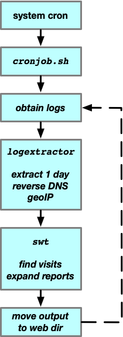
SWT performs the following steps:
- Load the web server log into SQL tables, normalizing some data items and detecting visits. (User specified transforms are applied to the log data before loading.)
- Derive per-visit information by examining the rows for all log records.
- Perform SQL queries that calculate globally interesting totals.
- Create N report sections. For each section,
- Perform one or more SQL queries against the database.
- Expand an expandfile template that formats the query results into an HTML report section.
- Generate and execute SQL statements that update cumulative usage statistics.
- Create report sections summarizing cumulative usage statistics.
SWT is driven by a shell script that invokes functions for each step. One function loads the database; another performs SQL queries for various totals and loads their result into environment variables. For report sections, the reporting function invokes the utility expandfile to expand a template. Each template fetches its SQL query from the database, and then invokes SQL and formats the results into HTML. Different templates use different environment variables; a single template can be used to create multiple report sections by changing the SQL tables containing the query and the variables used for labeling the output. For example, there is one template that produces a horizontal bar chart preceded by three columns of numbers. Setting appropriate parameters in the configuration can cause different columns of different tables in the database to be queried and displayed. The configuration variables for SWT are stored in SQL tables.
Output
Super Webtrax produces its output in a series of report sections. Each report section can be enabled or disabled. By default, SWT produces its output in a web page, showing the heading for each report section and a brief summary. Clicking a control on the web page replaces the summary with the full content of the report section. SWT can optionally write additional output files for input to other programs. Below are all the report sections.
(report section numbers in the list below will vary depending on which report sections a site enables.)
-
Navigation links
These links to each report section are automatically generated. Links to the release notes and to the current configuration ar also included.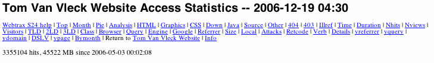
-
Optional preamble copied from a text file. See the "preamble" global option.
-
Month Summary
Usage by day for the last month, and comparson of usage to yesterday, week ago, and month average.
Table showing date, Visits, MB, file hits, HTML hits by day for last month. Highest numbers in this listing are colored red, lowest blue. Horizontal bar chart for each day striped with green for HTML files, blue for graphics and red for other files. Table comparing today's usage to usage on the previous day, usage a week ago, and average usage for the last N days. Figures are showin in gray if the change is small, red (or blue if negative) if the change is large.
Short Report: comparison table only.Option: rpt_summary_enabled - y if this report is enabled, default "y"
Option: rpt_summary_graphwidth - width of graph for this report, default "300"
Option: rpt_summary_lines - number of days to summarize, default "31"
Option: rpt_summary_threshhi - show in red/blue if percent diff greater, default "25"
Option: rpt_summary_threshlo - show in gray if percent diff less, default "11"
Option: rpt_summary_threshwk - increment thresh for weekend, default "50"
-
Pie Charts
Pie charts summarizing usage.
(These pie charts are produced by a Javascript program that uses the CANVAS tag. If the program can tell that CANVAS is not supported, it will display a tabular representation instead.)You can configure which charts are shown in the long and short reports. Each chart is identified by a three letter code: For example, the chart of All Visits by Browser is designated AVO. There are 96 possible charts, but a few are uninteresting, e.g. Indexer Hits by Class, since all hits from an indexer are in the class "indexer."
- first letter: N: Non-Indexer
- first letter: A: All
- first letter: I: Indexer
- second letter: W: Views
- second letter: V: Visits
- second letter: H: Hits
- second letter: B: Bandwidth (MB)
- third letter: O: by Continent
- third letter: T: by City
- third letter: Y: by Country
- third letter: F: by File Type
- third letter: C: by Visit Class
- third letter: R: by Browser type
- third letter: P: by Platform type
- third letter: S: by Visit Source
Short Report: The default short report has five charts, AVC: All Visits by Class, NVR: Non-Indexer Visits by Browser, NVP: Non-Indexer Visits by Platform, NVO: Non-Indexer Visits by Continent, ABF: All MB by File type.
Option: rpt_pie2_enabled - y if the pie chart section is enabled, default "y"
Here are 10 example pie charts.
- Pie chart: All Hits by File type. (AHF)
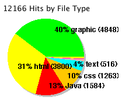
- Pie chart: MB by file type. (ABF)
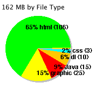
- Pie chart: Hits by Country. (AHY)
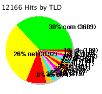
- Pie chart: Visits by Country. (AVY)
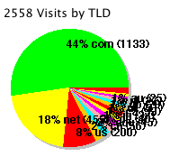
- Pie chart: MB by Country. (ABY)
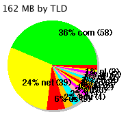
- Pie chart: Visits by Source. (AVS)
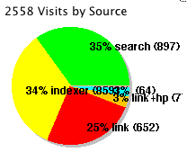
- Pie chart: Visits by Class. (AVC)
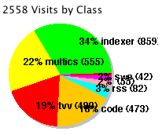
- Pie chart: Non-indexer Visits by Browser. (NVR)
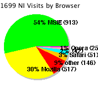
- Pie chart: Non-indexer Visits by Platform. (NVP)
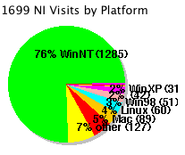
- Pie chart: Non-indexer Visits by Continent. (NVC)
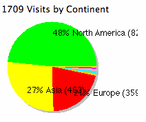
Pie charts are selected for inculsion in the short report view if their shortweight is nonzero, ordered by the value of shortweight. Pie charts are selected for inculsion in the long report view if their longweight is nonzero, ordered by the value of longweight.
tablecode shortweight longweight title ABC 000 050 MB by Class ABF 060 180 MB by Filetype ABO 000 050 MB by Continent ABP 000 050 MB by Platform ABR 000 050 MB by Browser ABS 000 050 MB by Source ABT 000 150 MB by Country ABY 000 050 MB by City AHC 000 050 Hits by Class AHF 000 190 Hits by Filetype AHO 000 050 Hits by Continent AHP 000 050 Hits by Platform AHR 000 050 Hits by Browser AHS 000 050 Hits by Source AHT 000 170 Hits by Country AHY 000 050 Hits by City AVC 090 130 Visits by Class AVF 000 050 Visits by Filetype AVO 000 100 Visits by Continent AVP 000 050 Visits by Platform AVR 000 050 Visits by Browser AVS 000 140 Visits by Source AVT 000 160 Visits by Country AVY 000 050 Visits by City AWC 000 050 Views by Class AWF 000 000 Views by Filetype AWO 000 050 Views by Continent AWP 000 050 Views by Platform AWR 000 050 Views by Browser AWS 000 050 Views by Source AWT 000 050 Views by Country AWY 000 050 Views by City IBC 000 000 Ix MB by Class IBF 000 050 Ix MB by Filetype IBO 000 050 Ix MB by Continent IBP 000 000 Ix MB by Platform IBR 000 000 Ix MB by Browser IBS 000 000 Ix MB by Source IBT 000 050 Ix MB by Country IBY 000 050 Ix MB by City IHC 000 000 Ix Hits by Class IHF 000 050 Ix Hits by Filetype IHO 000 000 Ix Hits by Continent IHP 000 000 Ix Hits by Platform IHR 000 000 Ix Hits by Browser IHS 000 000 Ix Hits by Source IHT 000 050 Ix Hits by Country IHY 000 050 Ix Hits by City IVC 000 000 Ix Visits by Class IVF 000 050 Ix Visits by Filetype IVO 000 000 Ix Visits by Continent IVP 000 000 Ix Visits by Platform IVR 000 000 Ix Visits by Browser IVS 000 000 Ix Visits by Source IVT 000 050 Ix Visits by Country IVY 000 050 Ix Visits by City IWC 000 000 Ix Views by Class IWF 000 000 Ix Views by Filetype IWO 000 050 Ix Views by Continent IWP 000 000 Ix Views by Platform IWR 000 000 Ix Views by Browser IWS 000 000 Ix Views by Source IWT 000 050 Ix Views by Country IWY 000 050 Ix Views by City NBC 000 050 NI MB by Class NBF 000 080 NI MB by Filetype NBO 000 050 NI MB by Continent NBP 000 050 NI MB by Platform NBR 000 050 NI MB by Browser NBS 000 050 NI MB by Source NBT 000 051 NI MB by Country NBY 000 050 NI MB by City NHC 000 050 NI Hits by Class NHF 000 090 NI Hits by Filetype NHO 000 050 NI Hits by Continent NHP 000 050 NI Hits by Platform NHR 000 050 NI Hits by Browser NHS 000 050 NI Hits by Source NHT 000 070 NI Hits by Country NHY 000 050 NI Hits by City NVC 000 050 NI Visits by Class NVF 000 050 NI Visits by Filetype NVO 060 050 NI Visits by Continent NVP 070 110 NI Visits by Platform NVR 080 120 NI Visits by Browser NVS 000 050 NI Visits by Source NVT 000 060 NI Visits by Country NVY 000 050 NI Visits by City NWC 000 050 NI Views by Class NWF 000 000 NI Views by Filetype NWO 000 050 NI Views by Continent NWP 000 050 NI Views by Platform NWR 000 050 NI Views by Browser NWS 000 050 NI Views by Source NWT 000 050 NI Views by Country NWY 000 050 NI Views by City To disable or enable a pie chart for the short or long views, add a line like the following to swt-user.sql:
UPDATE wtpiequeries WHERE tablecode = 'NVC' SET longweight = '000'; -
Analysis
Table summarizing usage totals.
Table: Hits, visits and MB for: HTML files, Graphics, visits with no html, head pages, searches, links, indexers, authenticated visits
No short/long report.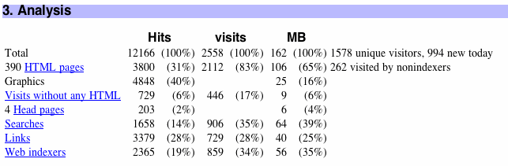
Option: rpt_analysis_enabled - y if this report is enabled, default "y"
-
HTML pages
Report of hits on HTML pages with horizontal bar chart striped by hit source.
Table: filename, KB, Hits Horizontal bar chart of hits, striped by hit source.
Short Report: total KB, total hits, most popular filename, KB, hits. The short report indicates the percent change of the totals since the previous day, and the number of days the most popular filename has been on top.Option: rpt_html_deltaredthresh - show percent changes greater than this in red in short report, default "20"
Option: rpt_html_enabled - y if this report is enabled, default "y"
Option: rpt_html_top - number of entries to show, default "30"
-
Graphic files
Report of hits on graphic files with horizontal bar chart striped by hit source.
Table: filename, KB, Hits Horizontal bar chart of hits, striped by hit source.
Short Report: total KB, total hits, most popular filename, KB, hits. The short report indicates the percent change of the totals since the previous day, and the number of days the most popular filename has been on top.Option: rpt_graphics_deltaredthresh - show percent changes greater than this in red in short report, default "20"
Option: rpt_graphics_enabled - y if this report is enabled, default "y"
Option: rpt_graphics_top - number of entries to show, default "10"
-
CSS files
Report of hits on css files with horizontal bar chart striped by hit source.
Table: filename, KB, Hits Horizontal bar chart of hits, striped by hit source
Short Report: total KB, total hits, most popular filename, KB, hits. The short report indicates the percent change of the totals since the previous day, and the number of days the most popular filename has been on top.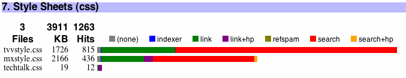
Option: rpt_css_deltaredthresh - show percent changes greater than this in red in short report, default "20"
Option: rpt_css_enabled - y if this report is enabled, default "y"
Option: rpt_css_top - number of lines to show, default ""
-
Flash files
Report of hits on flash files with horizontal bar chart striped by hit source.
Table: filename, KB, Hits Horizontal bar chart of hits, striped by hit source
Short Report: total KB, total hits, most popular filename, KB, hits. The short report indicates the percent change of the totals since the previous day, and the number of days the most popular filename has been on top.(picture)Option: rpt_flash_deltaredthresh - show percent changes greater than this in red in short report, default "20"
Option: rpt_flash_enabled - y if this report is enabled, default "y"
Option: rpt_flash_top - number of lines to show, default ""
-
Files Downloaded
Report of hits on binary download files with horizontal bar chart striped by hit source.
Table: filename, KB, Hits Horizontal bar chart of hits, striped by hit source
Short Report: total KB, total hits, most popular filename, KB, hits. The short report indicates the percent change of the totals since the previous day, and the number of days the most popular filename has been on top.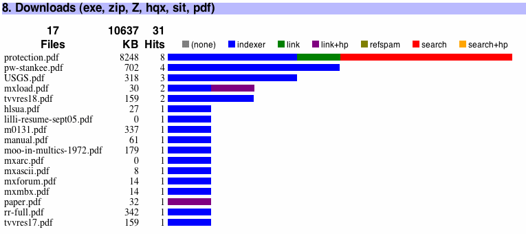
Option: rpt_dl_deltaredthresh - show percent changes greater than this in red in short report, default "20"
Option: rpt_dl_enabled - y if this report is enabled, default "y"
Option: rpt_dl_top - number of lines to show, default ""
-
Sound files
Report of hits on sound files with horizontal bar chart striped by hit source.
Table: filename, KB, Hits Horizontal bar chart of hits, striped by hit source
Short Report: total KB, total hits, most popular filename, KB, hits. The short report indicates the percent change of the totals since the previous day, and the number of days the most popular filename has been on top.(picture)Option: rpt_snd_deltaredthresh - show percent changes greater than this in red in short report, default "20"
Option: rpt_snd_enabled - y if this report is enabled, default "y"
Option: rpt_snd_top - number of lines to show, default ""
-
XML files
Report of hits on XML files with horizontal bar chart striped by hit source.
Table: filename, KB, Hits Horizontal bar chart of hits, striped by hit source
Short Report: total KB, total hits, most popular filename, KB, hits. The short report indicates the percent change of the totals since the previous day, and the number of days the most popular filename has been on top.(picture)Option: rpt_xml_deltaredthresh - show percent changes greater than this in red in short report, default "20"
Option: rpt_xml_enabled - y if this report is enabled, default "y"
Option: rpt_xml_top - number of lines to show, default ""
-
Java Class files
Report of hits on Java Class files with horizontal bar chart striped by hit source.
Table: filename, KB, Hits Horizontal bar chart of hits, striped by hit source
Short Report: total KB, total hits, most popular filename, KB, hits. The short report indicates the percent change of the totals since the previous day, and the number of days the most popular filename has been on top.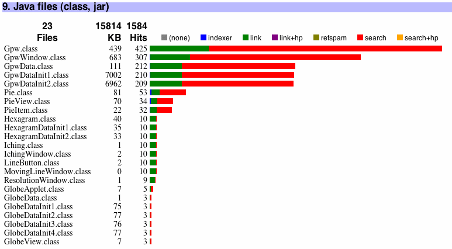
Option: rpt_java_deltaredthresh - show percent changes greater than this in red in short report, default "20"
Option: rpt_java_enabled - y if this report is enabled, default "y"
Option: rpt_java_top - number of lines to show, default ""
-
Source files
Report of hits on source files with horizontal bar chart striped by hit source.
Table: filename, KB, Hits Horizontal bar chart of hits, striped by hit source
Short Report: total KB, total hits, most popular filename, KB, hits. The short report indicates the percent change of the totals since the previous day, and the number of days the most popular filename has been on top.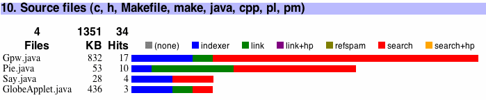
Option: rpt_src_deltaredthresh - show percent changes greater than this in red in short report, default "20"
Option: rpt_src_enabled - y if this report is enabled, default "y"
Option: rpt_src_top - number of lines to show, default ""
-
Other files
Report of hits on other files with horizontal bar chart striped by hit source.
Table: filename, KB, Hits Horizontal bar chart of hits, striped by hit source
Short Report: total KB, total hits, most popular filename, KB, hits. The short report indicates the percent change of the totals since the previous day, and the number of days the most popular filename has been on top.(picture)Option: rpt_other_deltaredthresh - show percent changes greater than this in red in short report, default "20"
Option: rpt_other_enabled - y if this report is enabled, default "y"
Option: rpt_other_top - number of lines to show, default ""
-
Files not found
Report of attempts to access nonexistent files.
Summary of missing file pathnames showing number of hits. Expected missing files, such as Microsoft discussion hits and Java class machinery requests are excluded, via the wtexptected404 table.
Short Report: total hits, most popular filename, hits.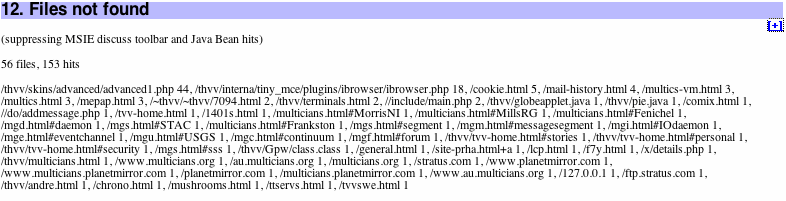
Option: rpt_fnf_enabled - y if this report is enabled, default "y"
-
Forbidden transactions
Table showing attempts to access files denied by .htaccess restriction.
Table showing forbidden transactions denied by .htaccess restriction (403 error code). filename, KB, number of hits, referring domain.
Short Report: total files, total KB, total hits, most popular filename, KB, hits, referrer.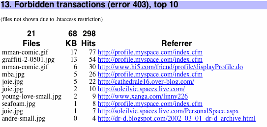
Option: rpt_403_enabled - y if this report is enabled, default "y"
Option: rpt_403_top - number of entries to show, default "10"
-
Illegal referrers
Report showing non-HTML files not referred by a local HTML file with horizontal bar chart.
Table showing illegal references, ie non-HTML files not referred by a local HTML file. referring page (hotlinked), filename, KB, number of hits. Horizontal bar chart of number of hits.
Short Report: total domains, total files, total KB, total hits.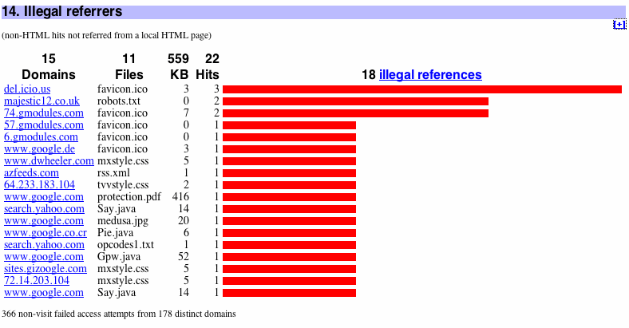
Option: rpt_illref_enabled - y if this report is enabled, default "y"
Option: rpt_illref_top - number of entries to show, default ""
-
Hits by access time
Vertical bar chart: hits by access time, striped by html/graphic/other.
Vertical bar chart: hits by access time, striped by html/graphic/other, with total hits and MB. No short/long report.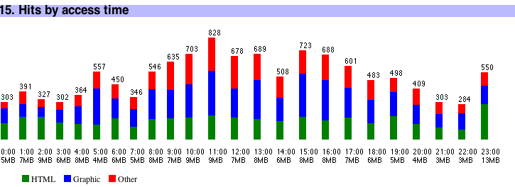
Option: rpt_accesstime_enabled - y if this report is enabled, default "y"
Option: rpt_accesstime_graph_height - height of graph for this report, default "144"
-
NI Visits by duration
Report of non-indexer visits ordered by estimated duration with horizontal bar chart.
excluding indexers and RSS feeds, showing visitor, hits, HTML hits, KB, duration of visit. Horizontal bar chart of duration, colored according to visit class.
Short Report:total domains, total KB, total hits, longest visitor, hits, HTML hits, KB, duration.Option: rpt_duration_enabled - y if this report is enabled, default "y"
Option: rpt_duration_top - number of entries to show, default "10"
-
NI Visits by number of hits
Report of non-indexer visits ordered by number of hits.
Excluding indexers and RSS feeds, showing visitor (if unique), hits, KB, number of visits with that many hits. New visitor names shown in color. Horizontal bar chart of number of visits, striped by visit class.
Short Report: total hits, total KB, total NI visits; visitor name if unique, largest number of hits in a visit, KB.Option: rpt_nhits_enabled - y if this report is enabled, default "y"
-
NI Visits by number of page views
Report of non-indexer visits ordered by number of page views.
(ie page views), excluding indexers and RSS feeds, showing visitor (if unique), HTML hits, KB, number of visits with that many hits. New visitor names shown in color. Horizontal bar chart of number of visits, striped by visit class.
Short Report:total hits, total KB, total NI visits; visitor name if unique, largest number of HTML hits in a visit, KB.Option: rpt_nviews_enabled - y if this report is enabled, default "y"
-
Visitors
Report of visits by domain with horizontal bar chart striped by visit class.
Table of visitor domain name, Visits, DSPV, KB, Hits. New visitors are shown in color with blank DSPV. Horizontal bar chart of number of hits, striped by visit class.
Short Report: same as long report but ignoring indexer visits.Option: rpt_domain_enabled - y if this report is enabled, default "y"
Option: rpt_domain_top - number of entries to show, default "20"
-
Visits by Top Level Domain
Report of visits by toplevel domain with horizontal bar chart striped by visit class.
Table of toplevel domain name and explanation, Visits, KB, Hits. Horizontal bar chart of number of hits, striped by visit class, for each toplevel domain.
Short Report: total TLDs, total visits, KB, hits; TLD with largest number of hits, KB, visits.Option: rpt_tld_enabled - y if this report is enabled, default "y"
Option: rpt_tld_top - number of entries to show, default ""
-
Visits by Second Level Domain
Report of visits by second level domain with horizontal bar chart striped by visit class.
Table: second level domain name, Visits, KB, Hits. Horizontal bar chart of number of hits, striped by html/graphic/other, for each second level domain.
Short Report: total domains, total visits, KB, hits.Option: rpt_domain2_enabled - y if this report is enabled, default "y"
Option: rpt_domain2_top - number of entries to show, default "20"
-
Visits by Third Level Domain
Report of visits by third level domain with horizontal bar chart striped by file type.
Table: third level domain name, Visits, KB, Hits. Horizontal bar chart of number of hits, striped by html/graphic/other, for each third level domain.
Short Report: total domains, total visits, KB, hits.Option: rpt_domain3_enabled - y if this report is enabled, default "y"
Option: rpt_domain3_top - number of entries to show, default "20"
-
Visits by City
Report of non-indexer visits by city with horizontal bar chart striped by visit class.
Table: Country code, continent, country name, city, Visits. Horizontal bar chart of visits by city showing country, continent and visits, striped by visit class.
Short Report: total visits; Country code, continent, country name, city with most visits, visits.Option: rpt_geoloc_enabled - y if this report is enabled, default "y"
Option: rpt_geoloc_top - number of entries to show, default "30"
-
Visits by Authenticated Users
Report of visits by username used to authenticate with horizontal bar chart striped by file type.
Table: authenticated user name, Visits, KB, Hits. Horizontal bar chart of number of hits, striped by html/graphic/other, for each user ID.
Short Report: total domains, total visits, KB, hits.Option: rpt_authid_enabled - y if this report is enabled, default "n"
Option: rpt_authid_restrict - empty if you want to include unauthorized sessions, default " WHERE authid != ''"
Option: rpt_authid_top - number of entries to show, default ""
-
Visits by Class
Report of hits by class, striped by source.
Table: visit class, Visits, KB, Hits. Horizontal bar chart of hits by class, striped by hit source.
Short Report: total classes, total visits, total KB, total hits.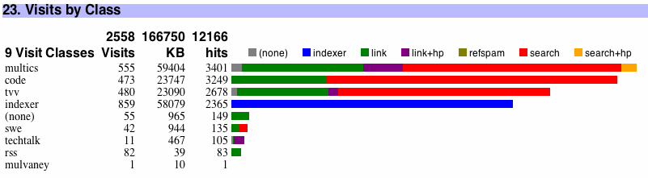
Option: rpt_class_enabled - y if this report is enabled, default "y"
-
Hits by Browser
Report of hits by browser, striped by visit class.
Table: browser, type and platform, Visits, KB, Hits Horizontal bar chart of hits, striped by visit class.
Short Report: browser count, total visits, total KB, total hits; most popular browser, visits, KB, hits.Option: rpt_browser_enabled - y if this report is enabled, default "y"
Option: rpt_browser_top - number of entries to show, default "20"
-
Hits by Query
Report of hits by query with horizontal bar chart.
Table: query, KB, Hits. Horizontal bar chart of hits.
Short Report: number of queries, total KB, total hits; query with largest number of hits, KB, hits. The short report indicates the percent change of the totals since the previous day, and the number of days the most popular query has been on top.Option: rpt_query_enabled - y if this report is enabled, default "y"
Option: rpt_query_top - number of entries to show, default "30"
-
Word Usage in Queries
Report of words in queries with horizontal bar chart.
Table: Words used in queries, number of uses today. Words are strings of letters: punctuation and digits are ignored. Horizontal bar chart of uses.
Short Report: number of words, total uses. Option: rpt_day_words_enabled - y if this report is enabled, default "y"
Option: rpt_day_words_enabled - y if this report is enabled, default "y"
Option: rpt_day_words_top - number of entries to show, default "20"
-
Visits by Search Engine
Report of hits by search engine with horizontal bar chart.
Horizontal bar chart of hits, striped blue for image search, green otherwise.
Short Report: number of engines, total KB, total hits; engine with largest number of hits, KB, hits. The short report indicates the percent change of the totals since the previous day, and the number of days the most popular engine has been on top.Option: rpt_engine_enabled - y if this report is enabled, default "y"
Option: rpt_engine_top - number of entries to show, default "30"
-
Files Crawled by Google
Report of files crawled by Google showing time.
Table: filename, KB, date for files crawled by googlebot. (This report section is an example that shows how to generate a specific table. I chose Google because most hits come from Google; similar reports could look for other crawlers instead or in addition.)
Short Report: filename, KB, date, for most recent file crawled.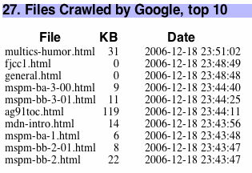
Option: rpt_google_enabled - y if this report is enabled, default "y"
Option: rpt_google_top - number of entries to show, default "10"
-
Hits by Referrer
Report of hits by referrer with horizontal bar chart.
Table: referring URL, Visits, KB, Hits. Referrers are hotlinked. Beware of following links, because they could be to a malicious website. New referrers are shown in red. Watched referrers are shown in a color specified in the preferences. Horizontal bar chart of hits.
Short Report: number of referrers, total KB, total hits; referrer with largest number of hits, KB, hits. The short report indicates the percent change of the totals since the previous day, and the number of days the most popular referrer has been on top.Option: rpt_referrer_enabled - y if this report is enabled, default "y"
Option: rpt_referrer_top - number of entries to show, default "30"
-
Hits by Referring Domain
Report of hits by referring domain with horizontal bar chart.
Table: referring Domain, Visits, KB, Hits. Watched domains are shown in a color specified in the preferences. Horizontal bar chart of hits.
Short Report: number of referring domains, total KB, total hits; referring domain with largest number of hits, KB, hits. The short report indicates the percent change of the totals since the previous day, and the number of days the most popular referring domain has been on top. Option: rpt_referrer_enabled - y if this report is enabled, default "y"
Option: rpt_referrer_enabled - y if this report is enabled, default "y"
Option: rpt_referrer_top - number of entries to show, default "30"
-
Number of Hits by file size
Report of hits by file size with horizontal bar chart.
Count of files by log10(size). Table: file size bucket, KB, Hits. Horizontal bar chart of hits.
Short Report: size bucket with largest number of hits, KB, hits.Option: rpt_filesize_enabled - y if this report is enabled, default "y"
-
Hits by Local Query
Report of hits by local query with horizontal bar chart.
Table: Filename, local query, Hits. Horizontal bar chart of hits.
Short Report: total hits; local query with largest number of hits, hits.Option: rpt_localquery_enabled - y if this report is enabled, default "y"
Option: rpt_localquery_top - number of entries to show, default "30"
-
Repeated Hits by Domain
Report of repeated hits by domain with horizontal bar chart.
Table: Excess loading of a file by a domain. Filename, domain, browser, Hits. Horizontal bar chart of hits. This report shows real hits only, from non-indexer visits. This may say that the user is not caching the file content, or is attacking the site.
Short Report: total hits.Option: rpt_repeat_cutoff - show only file/domain pairs with at least this many hits, default "5"
Option: rpt_repeat_enabled - y if this report is enabled, default "y"
Option: rpt_repeat_skip - filenames to ignore, default ""
Option: rpt_repeat_top - max number of entries to show, default "100"
-
Attacks on the site
Table showing various attacks on the site.
Table: Hits on selected CGIs with no HTML or graphics. Time, attacking domain, filename attacked, return code.
Table: Probes for known holes on the site. Time, attacking domain, filename attacked, return code.
Table: Shellshock attacks. Time, attacking domain, filename attacked, return code.
Table: log4j attacks. Time, attacking domain, filename attacked, return code.
Table: Excessive use of specified files. Attacking domain, filename attacked, return code, number of hits.
Short Report: total CGI, probe, shellshock, log4j, and overuse attacks, shown in red if nonzero.Option: rpt_attacks_enabled - y if this report is enabled, default "y"
Option: rpt_attacks_top - number of entries to show, default "10"
Option: rpt_attacks_watch - list of CGIs that may be attacked by hackers, default none, default ""
Option: rpt_attacks_watchuse - list of files whose excessive use is tracked, default none, default ""
Option: rpt_attacks_watchuselimit - number of uses that is excessive, default "5"
-
Transactions by server return code
Table of transactions by return code.
Table: Transactions, KB, server return code, explanation.
Short Report: percentage of good transactions, in red if it is below the specified threshold.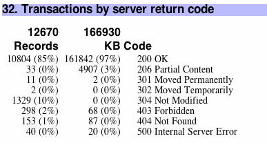
Option: rpt_retcode_enabled - y if this report is enabled, default "y"
Option: rpt_retcode_goodthresh - Show the good percentage in red if it below this value, default "95"
-
Transactions by protocol verb
Table of transactions by protocol verb.
Table: Transactions/KB by protocol verb
Short Report: verb with largest number of transactions.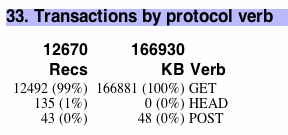
Option: rpt_verb_enabled - y if this report is enabled, default "y"
-
Visit Details
Listing of HTML files accessed in each visit by time.
An entry for each visit including date and time, domain ID (IP address or domain name), content files viewed (e.g. HTML, PHP, and PDF but not graphics and machinery), time between files, query and referring URL, total hits and bandwidth, user agent, visit class, and authenticated user name.Visits are selected for display by evaluating "criteria" for its side effect on the variable "print". If "print" is 1, the visit is displayed.
In April 2023, I added a few additional variables that can be used in the "criteria": 'ninvisit', 'htmlinvisit', 'graphicsinvisit', 'bytesinvisit', and 'duration'. Thus one can compute the average time between html pages for a visit, and suppress those visits that appear to be from site suckers.
The visit details report section also includes "events" from an optional event log table. Events from the event log are shown in time sequence in italics.
Visitors new today have their domain name shown in blue. Authenticated sessions have the domain name shown with a yellow background. The first time a referring URL appears, it is shown in red. Search queries are shown in green. Watched filenames are shown in a color specified in the preferences. Watched referrers are shown in a color specified in the preferences. Domains and browsers can also be watched: visits selected by these rules can be shown in the short report, summarized, or hidden. Filenames are shown in a color specified in the preferences if the server return code has specific values, e.g. missing files (code 404) are shown in light gray. The long report provides a control that can hide or show visits with the visit class "indexer".
Short Report: Same report, using different criteria to select visits for printing. The default criteria select visits containing a watched file or those from new referrers.Option: rpt_details_enabled - y if this report is enabled, default "y"
Option: rpt_details_eventlogfile - filename for event log, blank if none, default ""
Option: rpt_details_longcriteria - criteria executed by printvisitdetail to decide whether to add a visit to long report, default "%[*set,&print,=0]%%[*if,ge,pagesinvisit,=1,*set,&print,=1]%"
Option: rpt_details_longlogcriteria - criteria executed by printvisitdetail to decide whether to add a log entry to long report, default "%[*set,&logprint,=1]%"
Option: rpt_details_shortcriteria - criteria executed by printvisitdetail to decide whether to add a visit to short report, default "%[*set,&print,=0]%%[*if,ge,newreferrers,=1,*set,&print,=1]%%[*if,ge,wtcolorfiles,=1,*set,&print,=1]%%[*if,eq,vclass,=indexer,*set,&print,=0]%%[*if,eq,source,=refspam,*set,&print,=0]%%[*if,ge,boring,pagesinvisit,*set,&print,=0]%%[*if,ge,visit404pages,visitgoodpages,*set,&print,=0]%"
Option: rpt_details_shortlogcriteria - criteria executed by printvisitdetail to decide whether to add a log entry to short report, default "%[*set,&logprint,=0]%"
Option: rpt_details_showdirs - 1 to show directory names as well as filenames, default "0"
-
Cumulative Non-search Hits by Referrer Domain
Report of cumulative hits by referring domain with horizontal bar chart.
Table: KB, Hits by referring domain this year Watched domains are shown in a color specified in the preferences. Horizontal bar chart of hits. (The database actually has the referring URL, but usually it is more useful to have the domain only, e.g. digg.com)
Short Report: total referrers, MB, hits; referring domain with largest number of hits, MB, hits.Option: rpt_year_referrer_enabled - y if this report is enabled, default "y"
Option: rpt_year_referrer_top - number of entries to show, default "20"
-
Cumulative Hits by Query
Report of cumulative hits by query with horizontal bar chart.
Table: KB, Hits by query this year Horizontal bar chart of hits, striped by HTML/Graphic/Other.
Short Report: total queries, MB, hits; query with largest number of hits, MB, hits.Option: rpt_year_query_enabled - y if this report is enabled, default "y"
Option: rpt_year_query_top - number of entries to show, default "20"
-
Cumulative Query Word Usage
Report of cumulative words in queries with horizontal bar chart.
Table: Words used in queries, number of uses cumulative. Horizontal bar chart of uses.
Short Report: number of words, total uses.
Option: rpt_year_words_enabled - y if this report is enabled, default "y"
Option: rpt_year_words_top - number of entries to show, default "20"
-
Cumulative hits by visitor
Report of cumulative hits by visitor with horizontal bar chart.
Table: visitor name, DSLV, Visits, KB, Hits. Horizontal bar chart of hits, striped by HTML/Graphic/Other.
Short Report: total visitors, MB, hits; visitor with most hits, MB, hits. Data for this report is trimmed to "ndomhistdays" days.Option: rpt_year_domain_enabled - y if this report is enabled, default "y"
Option: rpt_year_domain_top - number of entries to show, default "20"
-
Visitors by days since last visit
Report of number of visitors by days since last visit with horizontal bar chart.
Table: Visitor name, days since last visit. Horizontal bar chart of hits, striped by HTML/Graphic/Other.
Short Report: total visitors and new visitors today.Option: rpt_dslv_domain_enabled - y if this report is enabled, default "y"
Option: rpt_dslv_domain_top - number of entries to show, default "20"
-
Cumulative hits on HTML Pages
Report of cumulative hits by HTML page with horizontal bar chart.
Table: filename, Visits, KB, Hits. Horizontal bar chart of hits, striped by HTML/Graphic/Other.
Short Report: total visitors, MB, hits; file with largest number of hits.Option: rpt_cumpage_enabled - y if this report is enabled, default "y"
Option: rpt_cumpage_top - number of entries to show, default "20"
-
Hits by month
Vertical bar chart of hits by month striped by html/graphic/other.
vertical bar chart: hits by month, bars striped by HTML/Graphic/Other. No long/short report.Option: rpt_bymonth_enabled - y if this report is enabled, default "y"
-
Traffic by year
Report traffic by year with horizontal bar chart.
Horizontal bar chart, one row per year, of hits striped by HTML/Graphic/Other.
Short Report: total visitors, bytes, hitsOption: rpt_byyear_enabled - y if this report is enabled, default "y"
-
Optional postamble copied from a text file. See the "postamble" global option.
Navigation links
-
Paths through the site
SWT also produces a .dot file for input to GraphViz, to visualize transitions between pages.Option: rpt_paths_dftfile - default filename if null or index.html, default "index.html"
Option: rpt_paths_enabled - y if this report is enabled, default "y"
Option: rpt_paths_trim - take only top N paths. Make less than 200 for speed and legibility., default "100"
Option: rpt_paths_trimref - trim this prefix off referrer, regexp, also used in query, default "^http:\/\/www\.example\.org"
-
Dashboard
SWT also produces dash.csv, CSV format file containing daily totals for inclusion in a dashboard.Option: rpt_dash_enabled - y if this report is enabled, default "y"


Installation Instructions
Super Webtrax requires perl5 and MySQL 4.1 or better because it uses nested queries. The "configure" script will try a sample query to test that this feature works.
Perform the following steps on the machine that will be running Super Webtrax:
-
Create a directory named /bin in your home directory for personal command line tools, and set your PATH.
cd $HOME mkdir bin echo "export PATH=$HOME/bin:$PATH" >> .bash_profile . .bash_profile(the last line above assumes your shell is bash.)
-
Make sure you have a reasonably recent version of MySQL installed. You should install it before you install CPAN module DBD::mysql. Set up a database username and password.
"On Unix, MySQL programs treat the host name localhost specially, in a way that is likely different from what you expect compared to other network-based programs. For connections to localhost, MySQL programs attempt to connect to the local server by using a Unix socket file. This occurs even if a --port or -P option is given to specify a port number. To ensure that the client makes a TCP/IP connection to the local server, use --host or -h to specify a host name value of 127.0.0.1, or the IP address or name of the local server. You can also specify the connection protocol explicitly, even for localhost, by using the --protocol=TCP option."
Set up the file .my.cnf in your home directory. It should look like
[client] user=dbusername password=pass host=domain database=dbname [mysqldump] user=dbusername password=pass host=domain database=dbnameExecute chmod 600 .my.cnf.
Make sure the mysql command works.
-
Make sure you have a reasonably recent version of Perl installed. (On a Mac, see https://formyfriendswithmacs.com/cpan.html and https://formyfriendswithmacs.com/homebrew.html).
Make a link from /usr/local/bin/perl to the Perl you will be using, so that shebang lines will work.
Set your environment variables, for example if your Perl version is 5.26, to
export VERSIONER_PERL_PREFER_32_BIT="no" export PERL5LIB="$HOME/bin:/opt/local/lib/perl5/5.26" export PERL_LOCAL_LIB_ROOT="/opt/local/lib/perl5/5.26" export PERL_MB_OPT="--install_base \"/opt/local/lib/perl5/5.26\"" export PERL_MM_OPT="INSTALL_BASE=/opt/local/lib/perl5/5.26"Install the CPAN modules LWP::Simple, Term::ANSIColor, DBI, DBD::mysql, XML::LibXML, and XML::Simple. (You have to install MySQL first because DBD::mysql's installation tests access to MySQL.)
-
Install expandfile to your $HOME/bin. Install Perl modules expandfile.pm readbindsql.pm readbindxml.pm eadapacheline.pm in your $HOME/bin. (These files are supplied in the /tools subdirectory.)
Type the command expandfile and you should get a usage message like USAGE: expandfile [var=value]... tpt....
Create a MySQL database for the log data. (If you wish to produce multiple SWT reports on one machine, you must create a different database for each report.)
-
If you are going to to do GEOIP processing on your log file, using the MaxMind free geolocation database,
- download and install libmaxxminddb from https://github.com/maxmind/libmaxminddb
- copy /usr/local/include/maxminddb.h and /usr/local/include/maxminddb_config.h into /opt/local/include/
- install the CPAN modules Try::Tiny GeoIP2::Database::Reader, and MaxMind::DB::Reader::XS
- Get a license key from MaxMind (see Geoip Processing)
- arrange to install the weekly geolocation database. (I use a cron job.)
-
Create directory /swt/install-swt in your home directory.
Visit
 https://github.com/thvv/swt in your browser.
Click the green "Code" button.
You can choose "Clone" or "Download ZIP."
Move the downloaded files into your swt/install-swt directory.
This populates the directory install-swt, including
subdirectories install-swt/tools
and install-swt/live.
https://github.com/thvv/swt in your browser.
Click the green "Code" button.
You can choose "Clone" or "Download ZIP."
Move the downloaded files into your swt/install-swt directory.
This populates the directory install-swt, including
subdirectories install-swt/tools
and install-swt/live.
Configure
Configure SWT by executing the command
cd install-swt; ./configure
The first time you run configure you will be asked for multiple data items
- directory path to install the Super Webtrax code?
- directory path where swtconfig.htmi will be installed?
- directory path where temp data will be written?
- directory path where executabletools are kept?
- directory path of toolthat checks that all files are present?
- directory path where output report is viewable?
- directory path of mysql command?
- directory path of mysqldump command?
- Your MySQL database name? (May be obtained from .my.cnf)
- database server domain address? (May be obtained from .my.cnf)
- database user name? (May be obtained from .my.cnf)
- database user password? (May be obtained from .my.cnf)
- is MySQL version less than 5.6? (new MySQL complains about -p on command line)
- title for Super Webtrax web page?
- short site name for Super Webtrax web page?
- your domain name? (used to detect local references)
- additional domain names? (optional space separated list used to detect local references)
- daily log file or running log file?
- combining multiple log files?
- do reverse DNS?
- do GEOIP?
- Directory pathname where GeoLite2-City.mmdb is found? (if doing GeoIP)
- Directory pathname where ISP puts log file?
- Directory pathname where to put bad logfiles?
- Directory pathname where to put processed logfiles?
Answer these questions.
The result of running configure is a file CONFIGURE.status which records the desired configuration. If you run configure when a CONFIGURE.status exists, it asks the questions again, but provides a default answer contained in the file, so that it is easy to change just a few configuration values, and just hit RETURN to accept the rest.
The configure script runs simple tests to ensure that mysql works and can create, load, and query SQL database tables with the supplied MySQL server name, database, userid, and password.
The configure script tests to ensure that expandfile works and can access the question answers from the shell environment. It then checks that expandfile can access the database and perform a nested SELECT with the supplied MySQL server name, database, userid, and password.
configure tests to make sure that logextractor2 works and that the MaxMind database is found, if GeoIP processing was selected.
configure uses expandfile to generate shell helper and configuration files that will be used when swt is executed.
Install
Check over the files that result from configuration, and then execute:
./install
The new software will be installed in the installation directory you specified. If it appears that this is a COLD install, you will be asked
reset database???
and if you answer yes, the cumulative databases will be re-initialized.
Tailor the Result of Install
You can tailor your SWT configuration to your local setup by modifying the file swt-user.sql. The configure script set up an initial version, but you may wish to add more information, such as:
- Definition of visit classes and their color in wtvclasses. These will show up in several charts. Have only a few classes.
- Mapping of pages or directories to visit class in wtpclasses. Have an entry for each top level directory in your webroot.
- Domains to treat as local. configure created entries for your domain with and without www, but you may wish to add an entry for your domain's numeric IP and for any alternate DNS names that map to your domain.
- Watched pages. If visits including certain pages are especially interesting, add them to this list and the visit will become "interesting."
- Boring pages. If visits to other pages are by new visitors should not make a visit interesting, add them here.
- Watched referrers. If you are interested in all visits referred by a certain page, add the referrer URL here.
- Disabled report sections. If your site has no Flash or Java files, for example, you can turn off these report sections.
- Max number of lines for bar charts. For a small site, you may wish to see all pages referenced, not just the top 20.
Log File Translation
To set up log file translation, tailor the cron job script created by configure to create your report page once a day.
If the web logs provided by your ISP do not contain referrer and agent, then Super Webtrax will not work well for you. If you control the web server configuration, select the NCSA Combined log format.
Where are your web logs and what are they called? The generated cron job assumes that some other agency places the logs in a specific directory, possibly gzipped. If your web logs must be copied from another machine, you may need to ensure that you can access the logs and handle the case of log rollover. This will require some shell script editing.
Does your web server log contain hits from one day or many?
- One day, extracted by your ISP. You may still need to use logextractor2, see below.
- Many days. Use logextractor2 to extract one day's hits at a time and process them. This option is not yet handled by configure.
How does your web server log indicate the source of a web transaction?
- Contains numeric IPs only. Use logextractor2 to do a reverse DNS lookup on IPs in input log file by specifying the -dns cachefile argument.
- Contains domain names as a result of reverse IP lookup by the ISP. You may still want to use logextractor2, see below.
If the cachefile gets to be large, like 16MB, then bad things will happen: truncate it every so often.
GeoIP Processing
Do you want IPs shown with a country name suffix and optional city, e.g. 12.178.27.243[US/Palo Alto CA] or adsl-226-123-174.mem.bellsouth.net[US]? logextractor2 can do this at additional cost in processing time, by using free data from MaxMind. To do this,
- Obtain a (free) license from MaxMind in order to use its free data. Visit https://dev.maxmind.com/geoip/geolite2-free-geolocation-data and follow instructions. Your License key must be specified when you fetch the data. The license key expires every so often and you have to get another one.
- Download and install the free GeoIP database from https://download.maxmind.com/app/geoip_download?edition_id=GeoLite2-City&license_key=(LICENSE_KEY)&suffix=tar.gz. I store my database file in $HOME/lib. Specify the pathname of the data file with the -geoip2 geofile argument to logextractor2. (You can also pay MaxMind for a more accurate GeoIP City database.)
- You may wish to turn off reverse DNS translation at your ISP's log processing, and do it with logextractor2. The advantage to this is that the TLD and Continent report sections will show the location of the domain for .com and .net domains. The disadvantage is that it takes more resources. Won't matter for light usage sites. Using the MaxMind GeoIP requires that you install some Perl machinery:
Does your web server log directly to SQL? If so, you will need to write a program to extract hit data from the table written by the server, and modify the swt and swtfunct.sh scripts to run it in place of logvisits.
Test
Try running Super Webtrax once from the command line and see what happens.
./swt http_log_file
It should produce swtreport.html. Correct any problems.
The installer generates a cron script to run Super Webtrax every night and to move the output files to your web statistics display directory. This job may require hand editing to adapt it to your operating system and account. Because jobs started by cron do not execute your shell startup, you should set $PATH and $PERL5LIB in your crontab. Try running the cron script from the command line to see if it creates a report page that looks right, and correctly moves it into your web space.
When the cron script is ready to install, use the facilities provided by your account to schedule it. On Linux or Unix, this may be the crontab -e command, or some other method provided by your operating system resource manager. Wait till the job runs and check the output. There can be access problems because the environment for cron jobs is not the same as the command line. Once you get a clean run of SWT, it should run without further supervision. I set my cron jobs up so that the program output is mailed to me every day, and glance at the message and delete it.
About once a month, I visit each client machine and delete files that have been processed.
Parts of Super Webtrax
The main parts of SWT are:
- templates - multiple templates for the report section pieces, with file type .htmt
- swtconfig.htmi - database name, server name, username and password for your site. Set up at installation.
- expandfile - Perl program that expands templates with database values: has several Perl module files.
- logextractor2 - Perl program to extract one day's usage from a log file
- logvisits - Perl program that reads a web log, recognizes visits, and writes MySQL load statements
- mys - Small shell script to invoke mysql interactively
- mysize - Small shell script to invoke mysql interactively
- mysqldumpcum - Small shell script to invoke mysqldump
- mysqlload - Shell script to show database sizes
- mysqlrun - Small shell script to invoke mysql
- printvisitdetail3.pl - Perl program to print the visit data report section
- read_apache_line.pm - Perl program to read lines from from a log file
- readapacheline.pm - Perl library that knows how to read a log file
- swt - main shell script.
- swt-user.sql - user tailoring of configuration data.
- swt.sql - configuration data.
- swtfunct.sh - utility shell function definitions.
- swtstyle.css, swt.js, excanvas.js, piecanvas.js - invoked to display the report
- visitdata - Perl program that reads the hits data and derives basic visit info, writes MySQL load statements
- visitdata3.pl - Perl program to generate the visit data from the hits table
- wordlist3.pl - Perl program to generate the list of words used in queries
- wtxmacros.htmi, rptheader.htmi - macros for report expansion
Data
Super Webtrax uses MySQL to store its data. It stores three kinds of data in the database:
- Configuration data. Most of the parameters that make SWT work are stored in data tables. These tables are reloaded every time SWT runs from an ASCII file supplied with SWT. Some configuration values may be specified by the user, as additions to or replacements for the default values: these are loaded from a user-created ASCII file. The configuration tables can be dropped after SWT has finished running, since they are reloaded every time. The 20 configuration tables and their contents are listed in a configuration web page. (A few more tables, essentially containing constants and machinery, are not listed on the configuration page.)
-
Hit and visit data from the most recent day.
When SWT runs, it reads the web log input and loads it into the table "hits" in the database.
SWT then examines the hits table and creates an entry in the "visits" table for each visit.
These two tables are then queried when report sections are written, and can be dropped after SWT has finished running.
These tables are:
- hits - one row per hit
- hitslices - access structure to prevent SQL errors
- visits - one row per visit
- visitslices - access structure to prevent SQL errors
-
Cumulative usage totals.
SWT also builds up some running totals in database tables that cover more than one day.
These tables can be reset once a year if the user wishes.
The tables are not dropped between SWT runs; they are dumped to ASCII files before SWT starts running so that they can be re-created if there is a database error.
The tables are:
- wtcumfile - one row per HTML file
- wtcumgoog - one row per file crawled by Google
- wtcumpath - one row per pair of local HTML file references
- wtcumquery - one row per query
- wtcumref - one row per referring URL
- wtdayhist - one row per day with total hits, visits, etc
- wtdomhist - one row per visiting domain, for last N days
- wtlog - optional log of events merged into daily listing
- wtsrhist - history saved from one run to the next
Usage
Your nightly cron script will obtain a log data file to be processed, and then execute
./swt inputfile
If the log file name ends with ".gz", ".z", or ".Z", the file will be read through gzcat to unzip it.
The swt script reads the log and generates the report page. The cron script is responsible for
- Fetching the raw usage log
- Backing up the database
- Invoking logextractor2 if required
- Invoking swt
- Checking for success and recovering from failure
- Moving the generated web pages to the destination directory
Configuration
The "config" link on the navigation links bar at the top and bottom of the web page goes to a generated configuration web page that displays the current reporting configuration.
General configuration
swtconfig.htmi is a configuration file that contains the location of the database server, database name, and user name and password on the server. Pointed to by swt. Secure this correctly if you are on a shared server. You may want to set up a .my.cnf file for use by mysql command (also secured).
mysqlload and mysqlrun are shell scripts used to load data into the MySQL database. mysqldumpcum is a shell script that is used to load data into the MySQL database. Pointed to by swt. These files may contain the database password, if the user cannot set up a .my.cnf file. Secure them correctly.
Global Options
The following values can be set in swt-user.sql in the wtglobalvalues table.
| Name | Meaning | Default |
| CHECKSWTFILES | script that makes sure files are present .. can be overridden by swt-user.sql | $HOME/swt/tools/checkswtfiles |
| CLEANUP | File deletion command. For debugging, change rm to echo | rm |
| COMMANDPREFIX | Prefix commands with this command, can be "nice" or null | nice |
| CONFIGFILE | Pathname of database configuration file -- should be mode 400, has database password | swtconfig.htmi |
| cumquerybytemin | min number of bytes to keep query in wtcumquery table | 2500 |
| cumquerycntmin | min number of queries to keep query in wtcumquery table | 2 |
| DASHFILE | name of output dashboard report | swtdash.csv |
| DATADIR | Directory where data files are kept .. can be overridden by swt-user.sql | $HOME/swt |
| ECHO | change to "true" to shut program up | echo |
| EXPAND | Template expander command | ./tools/expandfile |
| gbquota | bandwidth quota in GB for this account | 0 |
| gbquotadrophighest | Y to drop the highest day of the month in the bandwidth calculation | N |
| glb_bar_graph_height | height of a bar in horiz graph, also width of bar in vertical graph | 10 |
| glb_bar_graph_width | width in pixels of horizontal bar graph | 500 |
| IMPORTANT | component name of output important visits report | important |
| IMPORTANTFILE | name of last-7-days report | important.html |
| LOGVISITS | perl prog | perl ./tools/logvisits3.pl |
| MYSQLDUMPCUM | how to invoke mysqldump, contains password, must match config file, mode 500 | ./tools/mysqldumpcum |
| MYSQLLOAD | invoke mysql to source a file, contains password, must match config file, mode 500 | ./tools/mysqlload |
| MYSQLRUN | invoke mysql for one command, contains password, must match config file, mode 500 | ./tools/mysqlrun |
| ndomhistdays | number of days to keep in wtdomhist table | 366 |
| OUTPUTFILE | name of output report | swtreport.html |
| PATHSFILE | name of output paths report | paths.dot |
| pieappletheight | Height of pie chart | 220 |
| pieappletwidth | Width of pie chart | 260 |
| postamble | File copied at bottom of report | |
| preamble | File copied at top of report | |
| PRINTVISITDETAIL | perl prog | perl ./tools/printvisitdetail3.pl |
| PROGRAMDIR | Directory where templates are installed .. can be overridden by swt-user.sql | $HOME/swt |
| REPORTDIR | where to move the output report .. shd be overridden by swt-user.sql | $HOME/swt/live |
| returnurl | URL of user website, for return link | index.html |
| siteid | Short name for the dashboard | User |
| sitename | Title for the usage report | User Website |
| stylesheet | name of style sheet | swtstyle.css |
| TOOLSDIR | Directory where data files are kept .. can be overridden by swt-user.sql | $HOME/swt/tools |
| urlbase | Absolute URL prefix to live help | http://www.multicians.org/thvv/ |
| VISITDATA | perl prog | perl ./tools/visitdata3.pl |
| visitdata_refspamthresh | more than this many different referrers in one visit is spamsign | 2 |
| WORDLIST | perl prog | perl ./tools/wordlist3.pl |
| wtversion | version of this program for selecting help file | S24 |
Configuration tables
The following configuration tables can be extended or altered in swt-user.sql.
| wtboring | Boring pages. Discourage display of a visit in the important details. |
| wtcolors | Watched pages. Which pages should be shown in details and what color to display them in. |
| wtexpected404 | Files expected to be not found. Suppress these from the not found listing. |
| wtglobalvalues | Global constants and configuration, documented above. |
| wthackfilenames | File names that do not exist on the site and that attackers look for. Evidence of hacker attacks. |
| wthackfiletypes | File suffixes that do not exist on the site and that attackers look for. Evidence of hacker attacks. |
| wtheadpages | Which pages are head pages. |
| wtindexers | Web crawlwers. Which user agents are web spiders etc. |
| wtlocalreferrerregexp | Local referrer definitions. Defines which domains count as part of the website. |
| wtpclasses | File assignments to visit class. |
| wtpiequeries | Pie chart queries and weights. |
| wtpredomain | Transformations applied to the source domain of each hit before processing. |
| wtprepath | Transformations applied to file paths before processing. |
| wtprereferrer | Transformations applied to referrers before processing. |
| wtreferrercolor | Watched referrers. Which referring pages should be shown in details and in color. |
| wtreportoptions | Report option values, documented with the individual reports. |
| wtretcodes | Return code explanation. Describes the HTTP error codes. |
| wtrobotdomains | Robot domains. Which domains are used only by web crawlers. |
| wtshowanyway | Combinations of referrer and pathname to display even if wtsuffixclass says not to. |
| wtsuffixclass | Suffix classes. Grouping of file suffixes, and display options. |
| wtvclasses | Visit class definitions and color assignments. |
| wtvsources | Visit source definitions and color assignments. These sources are built into visitdata.pl. |
| wtwatch | Watch for domains and browsers to display specially in details report. |
Output Formatting
The web page is formatted using a standard style sheet unless you override the wtglobalvalues.stylesheet configuration item in swt-user.sql. If no style sheet is specified, the following definitions are used:
<style>
/* Styles for superwebtrax report */
BODY {background-color: #ffffff; color: #000000;}
H1, H2, H3, H4 {font-family: sans-serif; font-weight: bold;}
h1 {font-size: 125%;}
h2 {font-size: 110%;}
h3 {font-size: 100%;}
h4 {font-size: 95%;}
th {font-family: sans-serif;}
.headrow {background-color: #ddddff;}
h2 {background-color: #bbbbff;}
h3 {background-color: #ccddff;}
.brow {}
.vc {}
.indexer {font-style: italic;}
.refdom {font-weight: bold;}
.firstrefdom {font-weight: bold; color: blue;}
.authsess {background-color: #ffffaa;}
.newref {color: red;}
.max {color: red;}
.min {color: blue;}
.query {color: green;}
.details {font-size: 80%;}
.details dt {float: left}
.details dd {margin-left: 40px}
.legendbar {font-size: 80%; font-weight: normal;}
.navbar {font-size: 70%;}
.chart {}
.chart td {font-size: 90%; padding-top: 0; padding-bottom: 0; margin-top: 0;
margin-bottom: 0; border-top-width: 0; border-bottom-width: 0;
line-height: 90%;}
.monthsum {}
.monthsum td {font-size: 80%; padding-top: 0; padding-bottom: 0; margin-top: 0;
margin-bottom: 0; border-top-width: 0; border-bottom-width: 0;
line-height: 80%;}
.analysis {font-size: 90%;}
.analysis td {font-size: 90%;}
.sessd {}
.pie {}
.fnf {color: gray;}
.cac {color: pink;}
.fbd {color: green;}
.flg {color: purple;} /* flag for 'wtwtach' notes */
.filetype {font-size: 80%;}
.illegal {}
.subtitle {font-size: 80%;}
.fineprint {font-size: 80%;}
.logtime {font-style: italic;}
.logtext {font-style: italic;}
.cpr2 {padding-right: 2em;} /* cell-pad-right */
.cpl2 {padding-left: 2em;} /* cell-pad-right */
.numcol {padding-left: 5px; text-align: right;} /* cell-pad-left-align-right */
.mthsum {padding-right: 10px;}
.alert {background-color: #ffffff; color: red;}
.vhisto {padding: 0 10px 0 0}
.vbar {padding: 0 2px 0 1px; margin: 0 0 0 0; vertical-align: bottom;
font-family: sans-serif; font-size: 8pt; }
img.block {display: block;}
a:link {color: #0000ff;}
a:visited {background-color: #ffffff; color: #777777;}
a:hover {background-color: #ffdddd; color: black;}
a:active {background-color: #ffffff; color: #ff0000;}
.ctl {font-size: 12pt; float: right;} /* for the [+] control */
.h2title {text-decoration: none; color: black;}
h2 a:link {color: black;}
h2 a:visited {color: black;}
h2 a:hover {background-color: #ffdddd; color: black;}
h2 a:active {color: black;}
.starthidden {display: none;}
.short {font-size: 80%;}
.datatable {margin: 10px; float: left;}
.datatable td {padding-left: 5px;}
.datacanvas{float: left;}
.inred {color: red;}
.inblue {color: blue;}
.ingray {color: gray;}
.ingreen {color: green;}
.inorange {color: orange;}
.inpink {color: pink;}
.inpurple {color: purple;}
.inyellow {color: yellow;}
.inblack {color: black;}
.incyan {color: cyan;}
.indarkblue {color: darkblue;}
.infuchsia {color: fuchsia;}
.ingoldenrod {color: goldenrod;}
.inindigo {color: indigo;}
.inlightgreen {color: lightgreen;}
.inlime {color: lime;}
.inmaroon {color: maroon;}
.innavy {color: navy;}
.inolive {color: olive;}
.insilver {color: silver;}
.inteal {color: teal;}
.inviolet {color: violet;}
.inwhite {color: white;}
</style>
Details and Definitions
Referrers
If the log being processed includes the referrer string, this indicates what page a vistor's browser was displaying when it generated a request for your file. If the hit was generated by a search engine, the query may be included in the referrer string. (Google has mostly stopped including this: see "Search Queries and Engines" below.) SWT uses the referrer string to drive a lot of its analyses. Web crawlers sometimes spoof the referrer string; web proxies sometimes remove it.
Search Engines and Queries
SWT detects some queries as coming from search engines. Many popular engines are built in. In 2013, Google changed to use HTTPS security for many search references. This changed the way that it presents links to result sites; the links no longer show the text for a search query in the REFERRER field, so SWT cannot display or summarize such queries.
How can a visit be "local?"
If what appears to be a visit starts with a hit referred by a local page, this may be a sign that the visitor is accessing the site very slowly, or that the visitor is accessing your site through a proxy that uses more than one address (microsoft.com seems to do this). Some web servers seem to put hits in their logs out of order, and this may also cause this. I have set the default expire_time up to 30 minutes, and still see a lot of these on my site. Visits that begin with a "local" hit are marked with "*" in the visit details.
Treating Certain Referrers as local to your site
Configure this in swt-user.sql table wtlocalreferrerregexp
Ignoring certain Visitors
Many people have asked to be able to ignore their own hits on their site.
Toplevel Domains
By default, SWT summarizes hits by toplevel domain, e.g. ".com". For toplevel domains that correspond to a country, the country name is shown.
Remapping File Names, Domains and Referrers
Configure this in swt-user.sql tables wtpredomain, wtprepath, wtprereferrer.
Return Code Summary
SWT produces a table of all transactions logged by the web server, organized by return code. Most of the transactions will have code 200; but code 304 means that a distant proxy was checking to see if the file had changed, so it also counts as a hit. Code 206 means that part of the file was returned; a big file might be requested in chunks. Currently SWT counts all of these transactions as hits, since it can't tell which partial content answers are part of the same request. Other return codes are counted but their transaction is not considered a hit.
Platform Summary
SWT produces a chart of total accesses by platform, that is, by operating system, based on the user-agent string. This chart matches patterns against the referrer string sent by the browser and is not 100% accurate (browsers and crawlers can misrepresent themselves).
Definition of Terms
- hit
-
Each file transmitted by the server to a browser is logged by the web server as a "hit." For example, if a visitor visits an HTML page that refers to three GIFs, a .css file, and a Java applet, this visit would generate at least six hits, one for the HTML file, three for the GIF files, one for the css file, and one (or more) for the applet binary. (Assuming the visitor's browser has Java enabled and is loading images.) SWT can be told to ignore certain hits in various ways.
- visit
-
If there is a sequence of hits from the same domain, these are counted as a single visit. If the hits stop for longer than a certain idle time, and then start again, SWT will see two visits. You can configure the length of the idle interval. (See "How can a visit be 'local?'".)
- authenticated visit
-
If a section of the website requires the visitor to give a userid and password, the entire visit by the user will be marked with the userid given.
- visit class
-
Each visit is classified with an identifier. Visits that appear to be from web indexers are classified as "indexer". Web indexer visits are detected if the visit touches the file "robots.txt" (which must exist for this check to work), or if it comes from a web indexer URL (from table wtrobotdomains) or user agent (from table wtindexers) listed in the configuration.
Non-indexer visits are assigned a class by looking at the class of each file hit, and choosing the most popular.
The table wtpclasses in the configuration defines a class specifier for file pathnames relative to the server root. File names can be specified as a path name, or as a directory prefix name. The most specific value will be chosen. Directory prefixes should begin and end with slash. If no matching class is found, and the hit pathname contains a directory, the first level directory name is used as the class name. The class specifier is a comma separated list of class names, so that a file can be declared to be a member of more than one class. Ambiguous specifications weigh 1/N for each class if they contain N classes.
The table wtvclasses in the configuration specifies the color the class will be shown in, and a short explanation of the class.
- page
-
For comparing website activity, HTML page loads (that is, hits on pages with a suffix associated with 'html' in table wtsuffixclass) are more interesting than hits.
- hit source
-
Each hit is classified as to its source; a hit may be the result of a search, the result of a link, generated by a web indexer, a local reference, or unspecified.
- engine
-
Search engines are detected by looking at the referring URL, which has the URL of the search engine's page, and often the query used to search.
- query
-
When a hit appears to come from a search engine, SWT tries to determine what the engine was searching for. It can't always extract the query; some engines, like Gamelan, don't put the query term in the referring URL, and in these cases SWT doesn't show a query. Google encrypts the query, so we don't show those. See Search Engines and Queries above.
- Link
-
Other web sites' pages can have hyperlinks to yours. If the person browsing your site uses a browser that sends the referrer info, and if your web server puts that information in the log, you can see who links to you and how often those links are used. SWT will summarize the number of links to your pages.
- illegal
-
An illegal hit is a reference to an object on your site (not a source file) from a referrer that is not a source file on your site. One cause for this is people linking to your graphics from their pages. Another possible cause is an incorrect referrer string sent by a browser.
- Visits with no HTML
-
Visits that do not reference any source files are summarized separately. Such visits may result from web crawlers that look only at graphics files or PDF files, or from illegal references to your graphics from others' sites, or from a reference to a graphic, PDF, or whatever on your site in a mail message. These visits are not shown in the visit details section.
- Visitor
-
Each hit comes from a machine identified by its Internet domain name like barney.rubble.com. If the visitor cannot be identified by name, its IP Number is shown. If geoIP processing is performed by logextractor2, the IP will have a country name suffix (and optional city name) in brackets.
- DSPV
-
Days since previous visit.
- DSLV
-
Days since last visit. 0 if visited today.
- Toplevel Domain
-
Toplevel domains are the least specific part of the name, like .com or .de.
- Cumulative
-
SWT accumulates some statistics for a period longer than a day... someday.
- Indexers
-
Search engines work by reading your pages and building a big index on disk. When they do this it creates a sequence of hits. SWT will count these separately if you tell it the names of the search engines' indexers or domains, and if the browser (user agent) name is provided in the log. You can suppress these indexer visits from the visit details by setting an option; if the hits are displayed, they are in the CSS class "indexer", which a custom style sheet can decorate.
- Visit Details
-
You can suppress visits with fewer than a specified number of HTML pages: the default is 1. You can suppress visits by indexers.
Here is an example listing:
16:38 xxx01.xxx.net -- g.html (gamelan:-) 0:01, ga.class 2:25, gv.class [4, 212 KB; MSIE] {code}For each visit, Webtrax shows
-
Time of the visit.
If $show_each_hit is "yes", the following are shown:
- A double hyphen (--)
- Names of files displayed. GIF files, sounds, etc. are not shown. Files whose path matches a filedisplay option will have their names shown in a specified CSS class. (Using this feature requires that you use a custom CSS style sheet.) If the rettype option is used to specify that transactions with a given server return code are to be shown in a CSS class, the class will be applied. The classes "fnf" (gray) and "cac" (pink) are in the built-in style sheet; others can be provided in a custom style sheet.
- For all but the last file referenced, the time between references (in mm:ss format).
- If a reference came from an external URL, it is shown in parentheses. This URL will be made a clickable hyperlink if it looks like doing so would work; it will be colored red the first time SWT sees this referrer. If this is a search engine query, the query parameters will be shown in the URL in green.
- The number of hits and the number of KB transferred for this visit, in square brackets. If $show_browser_in_details is true, the browser type is included.
- The visit class of the visit in braces.
-
Time of the visit.
If $show_each_hit is "yes", the following are shown:
Extracting Logs
The program logextractor22 is supplied with SWT. It reads an NCSA [combined] web server log and extracts a day's worth of data. It optionally does reverse DNS lookup on numeric IPs. It also optionally does geoIP lookup on numeric IPs, and Super Webtrax will accept domains with the geoip lookup already done.
nice logextractor2 [-dns cachefile] [-geoipcity $HOME/lib/GeoLite2-City.mmdb] -day mm/dd/yyyy filepath ... > outpath
nice logextractor2 [-dns cachefile] [-geoipcity $HOME/lib/GeoLite2-City.mmdb] -day yyyy-mm-dd filepath ... > outpath
nice logextractor2 [-dns cachefile] [-geoipcity $HOME/lib/GeoLite2-City.mmdb] -day yesterday filepath ... > outpath
nice logextractor2 [-dns cachefile] [-geoipcity $HOME/lib/GeoLite2-City.mmdb] -day all filepath ... > outpath
Finds all log entries that occurred on the given day and writes them to stdout.
The program can use the free geo-location database provided by MaxMind Inc at www.maxmind.com by specifying the -geoipcity argument with the path of the binary "city" database. You need a (free) license to download the database.
Merging Logs
Your web server may serve pages for multiple domains. One way to handle this is to map each domain to a separate directory and use the ability to name a visit class after a toplevel directory. However, some servers produce a separate virtual host web usage log for each domain served, and merge the server logs into a single log, altering the toplevel directory. The programs combinelogs and logmerge are supplied with SWT. logmerge reads multiple NCSA [combined] web server logs, merges them, and writes a combined log. combinelogs is used to find the files to merge and prepare the arguments. This facility should be run before processing with logextractor2.
nice $BIN/combinelogs combinelogs.conf | sh
where combinelogs.conf looks like
www -drop /thvv lilli.com -add /lilli formyfriendswithmacs.com -add /formyfriendswithmacs multicians.org
Each line in combinelogs.conf lists the prefix of one log file. combinelogs.conf looks in the current working directory for sets of logs having the same date, and invokes logmerge to merge them. Log files are expected to be named e.g. www.20110418.gz, where the .gz suffix is optional. The digits are required. If -add or -drop are specified, they are passed through to logmerge to alter the top level file pathname by adding or dropping a prefix. The resulting output is named comb.20110418.gz.
Supporting SWT on Report Generating Machines
Each web server computer that prepares an SWT report runs a daily CRON job to invoke SWT once a day: it generates an HTML formatted report on the previous day's usage. These computers can obtain the web logs for the previous day in several ways:
- The server account may provide a log extract for each of my domains on that server. (e.g. Pair Networks) These logs are merged into one combined log in chronological order using combinelogs and logmerge.
- The server machine may provide access to a web log such as /var/log/apache2/access.log, with older rollover logs such as /var/log/apache2/access.log.0. Arguments to the program logextractor2 are used to select "only log records for yesterday" and create a combined log.
- Multiple server machines' web logs can be copied to a reporting server machine, and processed by custom software that reformats, filters, combines, and sorts the logs. I used this approach for a financial services client that combined logs from about a dozen server machines, and altered the file pathnames to indicate the server ID, so that a single report could show a visitor's trajectory across multiple web based services, as an aid to discovering secuirty attacks.
Running More Than One SWT on a Single Server
SWT uses a set of tables with fixed names for each report that it produces. To generate more than one SWT report on a server, you need to create more than one MySQL database. Each SWT instance will have its own directory subtree containing tailored files generated by configure and install. The instance will have its own swt-user.sql containting report tailoring and parameters.
For example, I manage an ISP account server used for client websites that provides virtual hosts for 13 domains. Separate web logs are generated by the ISP for each domain. One of these domains gets its own SWT report; the rest of the domains are combined into a single report.
To set this up, create a MySQL database for each group of sites, and a directory where SWT will be installed. Arrange for separate web logs to be generated for each site. Then install SWT once for each group. I set up the CRON job for daily log processing so that it moves the logs for each group into a different directory, and then runs SWT daily processing twice, from the different install directories. The 11 logs for the combined sites are processed by logmerge to create a combined log, with file names rewritten to include the site ID.
SWT Maintenance on my computer
Here is info on my personal setup that maintains and updates SWT installations on five web server machines. (Some of this need to be updated.)
- $HOME/thvv.bvars on my personal machine has bash aliases for each server machine, loaded at login.
- $HOME/.ssh on my personal machine has SSH keys that let me send files to SWT installations on each server machine. These are loaded into ssh-agent when I log in to my computer.
- $HOME/wtx on my personal machine is the master SWT source. It contains
- git repository. The master is at .
- loose files - active debugging directory, used when local testing.
- Latest .htmi and .htmt templates
- Files generated locally by running a report while testing (see .gitignore)
- runtimedir/ - report runtime directory used for local test output
- tools/ - executable copy of install-swt/tools for local testing
- install-swt/ - master copy of install directory, contains tools/ and maketar
- sites/ - support for my clients that use SWT. one directory for each, including a push script and copies of configuration files, especially swt-user.sql.
- doc/ - notes and graphics for improvements to this document
- future/ - ideas for future improvements
- obs/ - deleted and former software
- tests/ - old test files
- To do local testing of a change to SWT in $HOME/wtx, I copy httpd_access.0.done.gz from my host ISP and run a report, and compare it to the host ISP copy.
- Each client site has a subdirectory in sites/ which contains a push script, which I execute to make minor updates/fixes to the clients. Example: swt.sql has some tables that say who's a spammer, etc. Validate such changes by local testing, then push to host ISP by doing sites/thvv/push swt.sql. Make sure the change works and if so, push to other clients.
- sites/ also contains scripts to push certain files to all clients: iswt, iswtd, etc.
- When a bug is fixed, use the push script in each client support dir to copy modified templates to client machines.
- Once a change is validated, copy it to install-swt/ or install-swt/tools/. Update the {!expandfile-gh expandfile github repository:} by doing git push -u origin master.
- Test ./configure and ./install to make sure they work by generating a new PROGRAMDIR. Diff against $HOME/wtx to make sure all changes are as expected.
Dashboard
At a non-published URL, I have set up a CGI that displays a daily status table. It expands an HTMX template that shows information for the previous day:
- Email traffic monthly total and daily change by category
- Total ISP storage usage versus quota
- ISP Storage usage and daily change for configured directories
- SQL storage usage for configured ISP databases
- Web site usage: a table listing visits, MB, hits, 404s, cumulative totals for each configured site's dash.csv
- Hourly bar graphs of email message counts and bytes by category (graphed by rrdtool)
I usually check this once a day.
Writing a New report section
Every site will have a different swt-user.sql and cron job. You may need a local copy of the main shell script swt. Most control table changes can be done in swt-user.sql since it overrides swt.sql. New report sections can be provided to all SWT clients, or written specially for a particular client.
To create a new report section:
- Write the query first and try it out in mysql. If a new table is needed, figure out how to populate it from the existing tables or other data.
- If a new table is needed, write its init file and update statement, and try them out in mysql.
- Write the .htmt file. Usually it is best to start with an existing template and adapt it.
- From the query, determine the variables that should be passed to the template. The htmt file should not contain any SQL queries or knowledge of what the variable names in the query are: these come from SQL configuration tables. (A one-off report can relax this rule.)
- If the bar is to be striped or if names are to be colored or hyperlinked, adapt code from a similar template. For striped bars, the basic trick is to change the GROUP BY in the main query to return a row per stripe, and to switch to a new bar whenever some field changes value; often this requires a self join with the same table in order to get per-row totals as well as per-segment totals. MySQL behavior with GROUP BY is sometimes surprising and this may take tedious experiment.
- If the report section heading should contain totals, or if the longest bar in the chart is not the first, additional SQL queries must be run. Decide if these are global queries used by multiple report sections, or local queries for this report section only.
- Try to write the .htmt file so that it can be used by multiple report sections with the same layout but different data.
- Add the new report section to the table of report sections, wtreports. If this is for a single user, add it in swt-user.sql.
- Add the report section's parameters to the table of report section options, wtreportoptions. At least the template and enabled values should be provided.
- Add the report section's queries (if any) to the table of queries, wtqueries.
- if any new global queries are needed, add them to swt.sql and globalqueries.htmt.
- Test the new report section.
- Add a sectionrep call to the main shell script swt.
- To make the report available on client machines, push the template and swt.sql and swt to those that get it. If necessary, add configuration overrides to the client's version of swt-user.sql and push that also.
Changing the HTML format of a site's report
Changing header formatting
Individual reports are expanded by the "sectionrep" macro in swt given the section ID as argument as listed in the "swtreports" table. The "wtreportoptions" table identifies parameters for reports and these values are mapped into environment variables visible to expandfile, e.g. ('rpt_403','template','report403.htmt','') will cause variable rpt_403_template to be defined with value report403.htmt at runtime. Each report template .htmx file has similar boilerplate in its header, some of which, including the show/hide control, is in rptheader.htmi. If a report has a short and long form, the character ⊗ is shown in the H2: clicking on any text in the H2 will switch these reports from short to long and back. Tables start open instead of closed if a line like the following is included into swt_user.sql:
INSERT INTO wtreportoptions VALUES('rpt_domain','start','long','long=start with long report')
ON DUPLICATE KEY UPDATE optvalue='long';
Copyright (c) 2006-2025 by Tom Van Vleck